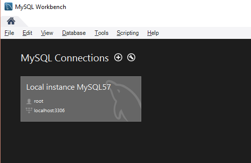
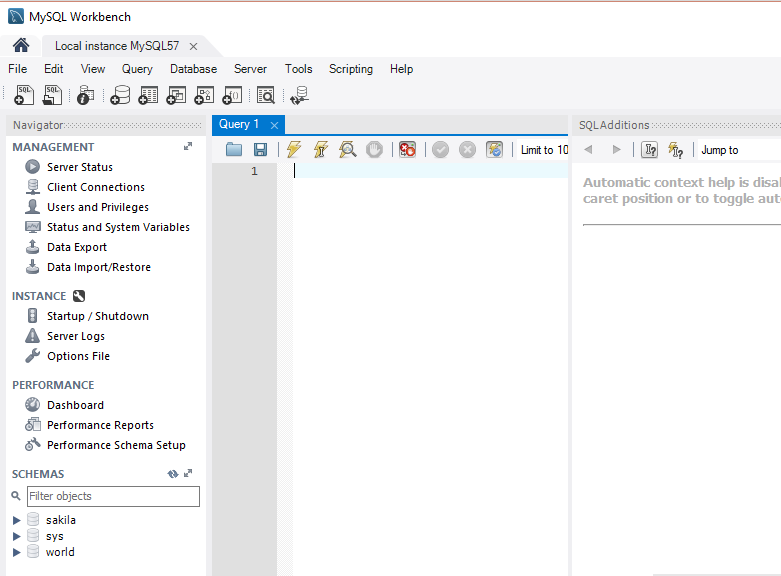
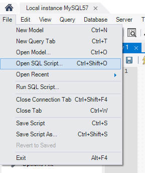
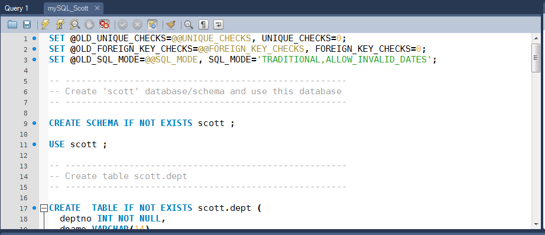
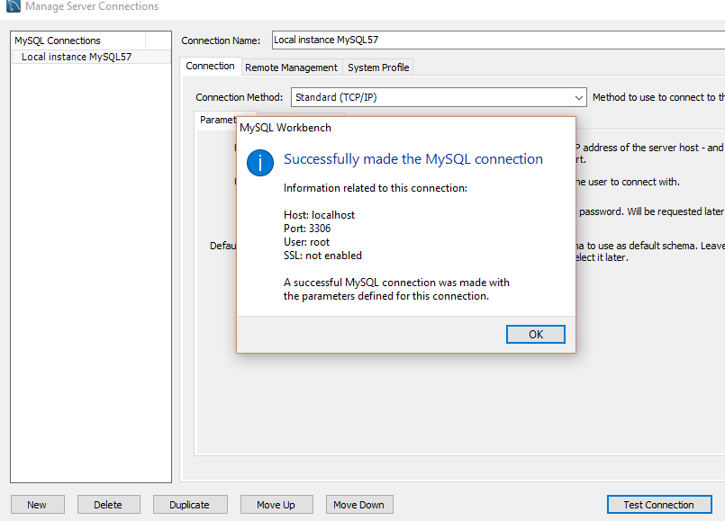
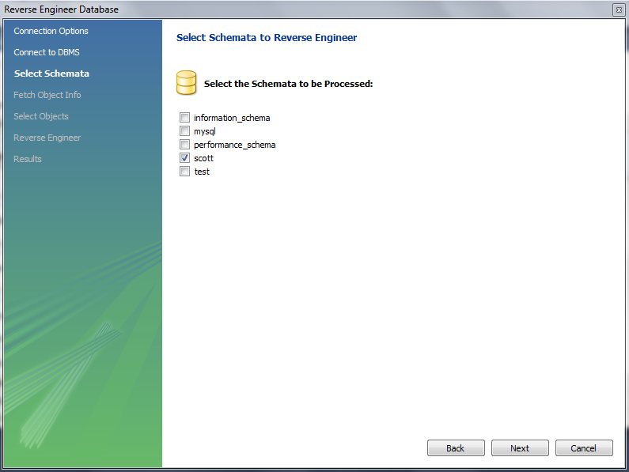
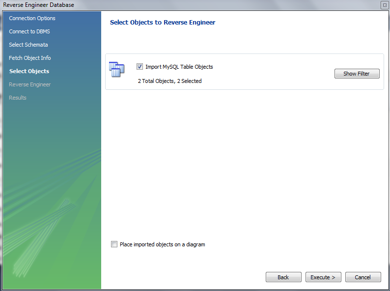
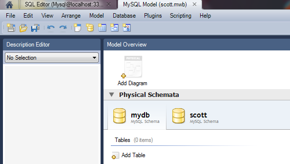
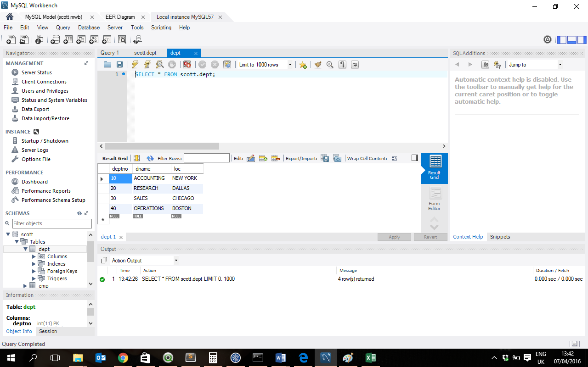

Review basic database concepts
Overview of MySQL terminology
Install MySQL Server & Workbench
Create and test connection to server
Start server
Review and execute SQL script
Reverse engineer sample database
View contents of sample database
Using the following link download the MySQL installer (you will need your login for Oracle).
http://dev.mysql.com/downloads/windows/installer/5.7.html
MySQL Server, MySQL Workbench, sample databases and documentation will all be installed.
Upon returning to MySQL Workbench, you may wish to confirm that the database server instance is running before you begin work with your database. More than likely, it will already be running (if you selected 'Automatic' as the startup type). To check this, click on the connection name on the main page when you open MySQL Workbench.

This should connect successfull to your database instance and show you the following screen:

Although you will eventually create your own MySQL tables, for the first few weeks we are going to work with a sample database that is already populated with tables and records. In this section, you will run an SQL (Structured Query Language) script to create and populate this database.
Save the mySQL_Scott.sql file (right-click and select Save Link As...) This file contains the SQL script that will create the Scott database (and two tables, Employee and Department).
In MySQL Workbench, choose File Open SQL script. Browse to the location where you saved the file and select it.

Read through the SQL script - there are comments provided throughout which may aid your understanding of the commands that are about to be carried out. Then, select Execute (the icon that looks like lightning).

The output window displays the result of the execution, which should be error-free!
The last step checked the SQL script for errors; however, we still need to connect to the database and then tell MySQL Workbench that we want to create the database and tables from the SQL script (which is known as 'reverse engineering').



You should now see the 'scott' schema in the MySQL Model tab. Click on Save Model to Current File (the disk icon) and name the file scott.mwb.

In this step you will view the contents of the Scott database that you just created.

So far our database contains two tables (Employee and Department). We have 14 employees working in 4 different departments.